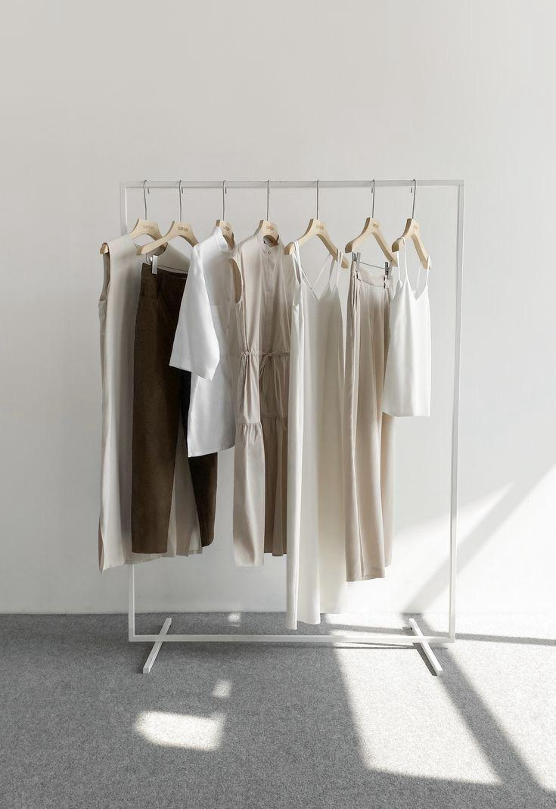

Consultoria completa
Um processo personalizado para alinhar sua imagem aos seus objetivos e traduzir seu estilo em escolhas práticas.
Saiba maisConsultoria de imagem e estilo
Construa uma imagem que traduza sua essência, fortaleça sua presença e acompanhe os objetivos que você deseja alcançar.
Conheça os serviços
A roupa vai muito além da estética: ela comunica, empodera e transforma. Sua imagem revela presença, valores e a forma como você deseja ser percebida nos seus diferentes momentos.
Meu trabalho é guiar você na construção de uma imagem autêntica, com escolhas que façam sentido para sua rotina, sua personalidade e sua trajetória profissional.
Para você
Atendimentos pensados para transformar dúvidas do vestir em escolhas seguras, versáteis e coerentes com quem você é.
Um processo personalizado para alinhar sua imagem aos seus objetivos e traduzir seu estilo em escolhas práticas.
Saiba maisUma sessão online para resolver desafios específicos, como um evento, uma compra ou uma combinação.
Saiba maisStyling para ensaios fotográficos que reforçam seu posicionamento e sua presença diante das câmeras.
Saiba maisPlanejamento de looks para viajar com praticidade, versatilidade e estilo em cada ocasião.
Saiba mais
Imagem com clareza
Quando você entende o que as suas escolhas visuais comunicam, vestir-se deixa de ser uma dúvida diária e passa a ser uma forma de se posicionar.
Conheça minha abordagemO processo
Uma consultoria construída para acolher o seu momento e criar critérios que façam sentido para a sua vida real.
Começamos entendendo seu momento, seus objetivos e o que você deseja comunicar.
Transformamos referências e preferências em caminhos práticos para o seu estilo.
Você ganha mais clareza para criar escolhas que representem a sua identidade.

Sobre mim
Sou especialista em imagem e estilo e apaixonada por ajudar mulheres a se posicionarem com clareza e confiança através do vestir.
Acredito que cada escolha pode refletir autenticidade, fortalecer presença e valorizar sua trajetória.
Conheça a EdnaContato
Entre em contato para conhecer as possibilidades de consultoria e encontrar o atendimento mais adequado para você.